17 · 机器人基础模型：数据、动作表示与通用策略
阅读目标：理解通用机器人策略的三个支柱——数据（怎么采、怎么混）、动作表示（分块、离散化、扩散 / 流匹配）、架构（VLM 主干 + 动作专家、快慢双系统）；会推导 ACT 的时间集成、流匹配动作头与 DCT 动作分词；知道怎样公平评测通用策略。本章是 06 章 VLA 的扩展。
1. 全景

查看 Mermaid 图源码
flowchart LR T[遥操作: 主从臂 / VR / 外骨骼] --> D[多机器人数据集] U[手持采集器 UMI 类] --> D H[人类视频 / 第一人称] --> P[预训练: 视觉语言 / 潜动作] S[仿真 / 合成数据] --> D W[互联网图文] --> P P --> M[VLM 主干] D --> F[机器人数据训练 / 共训练] M --> F F --> G[通用策略: 语言 + 图像 + 本体 → 动作块] G --> A[少量目标任务数据微调] A --> R[部署 + 失败数据回流] R --> D
2. 符号
| 符号 | 含义 | 约定 |
|---|---|---|
| 多相机图像、本体状态、语言指令 | V 个相机 | |
| 动作块 | ||
| 流匹配时间 | 与环境时间 t 区分 | |
| 速度场网络（动作专家） | 输出与 同形状 | |
| CVAE 风格潜变量 | ACT 中编码演示风格 | |
| 时间集成衰减系数 | ACT 中权重 | |
| embodiment 标识 | 机器人类型 / 动作空间 |
3. 数据：采集方式与混合
| 方式 | 优点 | 局限 |
|---|---|---|
| 主从臂遥操作（ALOHA 类） | 直观、可做双臂精细动作，动作空间与机器人一致 | 需要实体机器人，采集速度受限 |
| VR / 手部追踪 | 远程、可扩展到人形 | 视觉延迟，力反馈弱 |
| 手持采集器（UMI） | 无需机器人，可在任意场景采集 | 需相机位姿估计，动作要映射到具体机械臂 |
| 人类视频 | 规模巨大、场景多样 | 无动作标签，形态差异 |
| 仿真生成 | 无限、可自动标注 | Sim2Real 差距，资产多样性 |
推导 1 · 数据混合权重与有效样本
多个数据集 混合训练，按权重 采样，目标为 。若直接按样本数比例采样，大数据集主导；Open X-Embodiment 等工作按数据集手动或启发式调整权重，并对单一数据集内的重复轨迹降权。
一个常用启发式是温度采样：，T=1 按样本数，T→∞ 均匀。另一个关注点是“多样性比数量更重要”：模仿学习的数据规模研究发现，泛化到新环境与新物体时，增加环境与物体的种类比在同一环境内堆叠演示数量更有效，且每个环境—物体组合只需少量演示。规划采集时应先覆盖多样性，再加密。
数据质量检查：动作与图像时间戳对齐、坐标系与单位一致（06 章动作适配器）、去除失败与停顿片段（或保留并标注）、记录相机内外参与夹爪类型。
4. 动作分块与 ACT
ACT（Action Chunking with Transformers）一次预测 H 步动作，降低决策频率带来的复合误差（06 章式 6.3 中有效步数 T 变为 T/H），并用 CVAE 处理人类演示的多样性。
推导 2 · CVAE 损失与时间集成
训练时编码器从（本体状态、演示动作块）推断风格潜变量 ，解码器从（图像、本体、z）重建动作块。损失为 L1 重建加 KL：
LaTeX 源码
L_{ACT}=\left\|A_t-\hat A_t(o_t,z)\right\|_1+\beta\,D_{KL}\left(q_\phi(z\mid A_t,q_t)\,\|\,\mathcal N(0,I)\right).\tag{17.1}部署时 z 取先验均值 0，得到确定性输出。每一步都推理一次，则时刻 t 有来自过去多个推理的重叠预测 （i 步之前那次推理对 t 的预测）。时间集成按指数权重平均：
LaTeX 源码
a_t=\frac{\sum_iw_i\hat a_t^{(t-i)}}{\sum_iw_i},\quad w_i=\exp(-m\,i).\tag{17.2}ACT 原文中 对应最早的预测，权重随新旧变化的方向由 m 的符号与索引约定决定；实现时需确认“越新越重”还是“越旧越重”。m 越大越依赖单次预测（响应快），m 越小越平滑（可能滞后）。这与 06 章“只执行前 步”的滚动执行是两种不同的块使用策略。
5. 动作表示：离散 token、扩散与流匹配
| 表示 | 代表 | 推理方式 | 优缺点 |
|---|---|---|---|
| 逐维均匀分箱 | RT-2、OpenVLA | 自回归逐 token | 复用 LLM 词表；高频长动作块 token 多、慢 |
| 压缩分词（DCT + BPE） | FAST | 自回归 | token 少、适合高频；需解码回连续 |
| 扩散头 | Diffusion Policy、Octo | 多步去噪 | 多模态好；采样步数影响延迟 |
| 流匹配头 | π0 类 | ODE 积分约 10 步 | 训练稳定、步数少；需数值积分 |
| 回归 + 分块 | ACT | 一次前向 | 快；多模态依赖 CVAE |
推导 3 · 流匹配动作头
取噪声 与专家动作块 ，沿直线插值（本讲义约定 τ=0 为噪声、τ=1 为数据）：
LaTeX 源码
A^\tau=\tau A+(1-\tau)\epsilon,\qquad\frac{dA^\tau}{d\tau}=A-\epsilon.\tag{17.3}条件速度场的回归目标就是这个常速度。网络 最小化
LaTeX 源码
L_{FM}=\mathbb E_{\tau,\epsilon,(o,A)}\left\|v_\theta(A^\tau,\tau,o)-(A-\epsilon)\right\|^2.\tag{17.4}推理从 出发用欧拉法积分：，δ=0.1 时 10 步。与 02 章 Flow Matching 的条件路径一致；不同论文对 τ 方向（噪声在 0 还是 1）与目标符号约定不同，复现时以代码为准。π0 的设计是把图像与语言交给预训练 VLM 处理，再用一个较小的“动作专家”Transformer 处理本体状态与带噪动作 token，两者通过注意力共享上下文；τ 的采样分布偏向噪声较大的区域以强调难样本。
推导 4 · DCT 动作分词为何压缩高频动作
对动作块的每一维 做 DCT-II：
LaTeX 源码
C_k=\sum_{n=0}^{H-1}a_n\cos\left[\frac\pi H\left(n+\tfrac12\right)k\right],\quad k=0..H-1.\tag{17.5}平滑轨迹的能量集中在低频系数，高频系数接近 0。把 乘尺度后取整，大量高频项变为 0；再把所有维度的系数按“低频优先”展平并用 BPE 合并常见模式，得到远少于 的 token。解码时逆 DCT 恢复连续动作。对比式 (6.7) 的逐维分箱：50 Hz、1 秒动作块、7 维即 350 个 token，而压缩后通常只需几十个。量化尺度决定重建误差与 token 数的权衡。
6. 通用策略架构
| 模型族 | 主干 | 动作部分 | 特点 |
|---|---|---|---|
| RT-1 / RT-2 | EfficientNet+Transformer / VLM | 离散 token | RT-2 与网络图文共训练，迁移语义知识 |
| Octo | Transformer（从头训练） | 扩散头 | 开源，支持多相机、多动作空间，便于微调 |
| OpenVLA | Llama 2 + DINOv2/SigLIP 视觉 | 256 箱离散 token | 开源 7B，LoRA 微调 |
| π0 / π0-FAST | PaliGemma VLM | 流匹配动作专家 / FAST token | 跨形态、多任务、高频灵巧动作 |
| RDT | 扩散 Transformer | 扩散 | 双臂、统一动作空间 |
| GR00T N1 等双系统 | VLM（慢，System 2）+ 动作模块（快，System 1） | 扩散 / 流 | 面向人形，推理频率分离 |

查看 Mermaid 图源码
flowchart TD I[多相机图像] --> V[VLM 视觉语言主干: 理解场景与指令, 约 1–10 Hz] L[语言指令] --> V V --> Z[潜规划 / 子目标 / KV 上下文] Q[本体状态 高频] --> S[动作模块: 扩散 / 流匹配, 30–200 Hz] Z --> S S --> A[动作块 → 控制器]
跨形态（cross-embodiment）的关键是动作空间对齐：统一为末端位姿增量 + 夹爪，或使用最大维度向量并对未用维度 mask；每个样本携带 embodiment 标识与归一化统计。归一化统计必须按机器人分别计算并随模型保存，否则部署时同一数值对应不同物理量。
7. 评测：仿真基准与实机统计
| 基准 | 环境 | 考察 |
|---|---|---|
| LIBERO | 仿真桌面操作 | 空间、物体、目标与长时任务的迁移 |
| CALVIN | 仿真 | 语言条件长时任务链 |
| SIMPLER | 仿真复刻真实场景 | 与真实评测结果的相关性 |
| 实机评测 | 自建 | 成功率、干预、时间、安全事件 |
推导 5 · 配对比较两个策略
A、B 两策略在同一组 n 个初始条件（物体摆放、指令）下各跑一次。只看“结果不一致”的配对：A 成 B 败计 ，A 败 B 成计 。在“两者成功率相同”的原假设下，不一致配对中 A 赢的次数服从 ，精确符号检验（McNemar 精确版）的 p 值为
LaTeX 源码
p=2\sum_{k=0}^{\min(n_{10},n_{01})}\binom{n_{10}+n_{01}}{k}0.5^{n_{10}+n_{01}},\ \text{上限取 }1.\tag{17.6}例：30 个初始条件中 ，p≈0.11，尚不足以下结论。配对设计消除了初始条件难度的差异，比两组独立试验更省次数。单策略成功率的置信区间用 08 章 Wilson 区间。
报告时同时给出：训练与测试的物体 / 场景 / 指令是否见过（seen / unseen 分层）、每条失败的类别（grounding、抓取、放置、碰撞、超时）、推理延迟分布与控制频率，以及微调所用的目标任务演示数量。
8. 局限与开放问题
- 数据仍是最大瓶颈：遥操作昂贵，人类视频缺动作，仿真缺多样资产与真实接触。
- 动作空间不统一使跨形态迁移有限，常需目标机器人上的微调数据。
- 长时任务、失败恢复与安全约束仍依赖外部规划和监控。
- 基准结果对评测协议敏感；不同论文的“成功”定义与试验次数应先对齐再比较。
来源：RT-1、RT-2、ALOHA / ACT、Mobile ALOHA、UMI、Open X-Embodiment、Octo、OpenVLA、π0、FAST、RDT、GR00T N1、模仿学习数据规模规律、LIBERO、CALVIN、SIMPLER。模型细节以原文与官方代码为准，本章不提供性能排行。